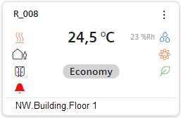

Adapting Tiles for Room Overview in Flex Client
Tiles configured for Room Overview are required to display in Flex Client. The tiles are preconfigured for HQ libraries; no changes required. Custom tile configurations must be created for customer libraries or room integrations that are not supported by HQ.

The following HQ libraries are supported:
- Desigo Room Automation with standard application via ABT integration, (DXR1, DXR2 or PXC3 and all applications versions)
- Smart thermostat (RDS110.R) via ABT integration
- Direct Modbus room device (RDF302) integration
- LON room device (RXC..) integration via PX primary automation station
Prerequisites
- System Manager is in Engineering mode.
- System Browser is in Management View.
Overview
1 | Create Folder for Software Options |